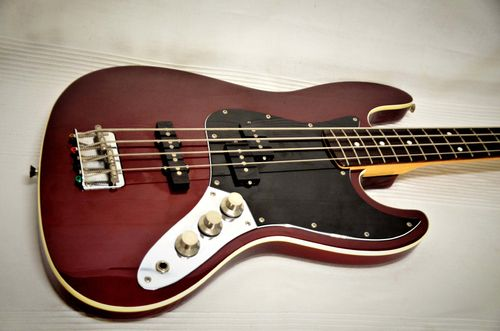

Hello, this website for proving why guitars are so cool.

Fender Japan Aerodyne Jazz Bass AJB OCR>
This is a bass guitar I bought one year ago.
This bass guitar is equipped with two different types of pickup.
Thanks to this hybrid, you can play a lot of sounds with just one guitar>
-Home
- Squier Bullet HSS Stratocaster Electric Guitar 2-Color Sunburst
-Hamer XT-Series Double Cut electric guitar